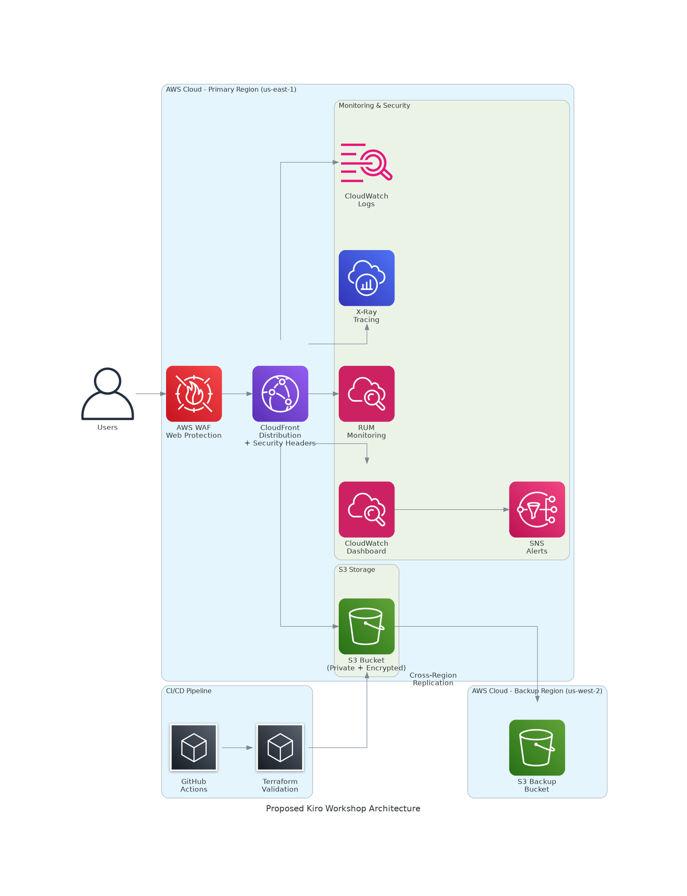

Architecture Overview
The Kiro Workshop Sudoku application is a modern, serverless web application built on AWS cloud infrastructure. It demonstrates a cost-effective, scalable architecture suitable for static web applications with global distribution requirements.
Architecture Type: Serverless Static Web Application
Primary Services: S3, CloudFront, CloudWatch, SNS, RUM, X-Ray
Deployment Method: Infrastructure as Code (Terraform)
Current vs. Proposed Architecture
Current Architecture

Basic serverless setup with monitoring
Proposed Architecture

Enhanced with security, backup, and CI/CD
Network Configuration
Content Delivery Network
- Global Distribution: CloudFront edge locations worldwide
- Protocol: HTTPS-only with automatic HTTP redirect
- Compression: Enabled for all content types
- IPv6: Enabled for modern client support
Security Configuration
- Origin Access: CloudFront Origin Access Control (OAC)
- S3 Bucket Policy: Restricts access to CloudFront only
- Public Access: Completely blocked at S3 level
- SSL/TLS: CloudFront default certificate
Security Gap: Missing security headers (HSTS, CSP, X-Frame-Options) and Web Application Firewall (WAF) protection.
Conclusion
The Kiro Workshop Sudoku application demonstrates a solid foundation for a serverless web application with excellent cost optimization. The current architecture provides good performance and scalability at a very reasonable cost of approximately $4.53 per month.
Key Strengths:
- Cost-effective serverless architecture leveraging AWS Free Tier
- Global content delivery via CloudFront CDN
- Comprehensive monitoring and alerting setup
- Infrastructure as Code with Terraform
Critical Areas for Improvement:
- Security hardening (headers, WAF, encryption)
- Backup and disaster recovery implementation
- CI/CD pipeline for operational excellence
- Enhanced monitoring and logging
Recommended Next Steps:
- Immediately implement security headers and WAF protection
- Enable S3 versioning and cross-region replication
- Set up automated deployment pipeline
- Establish comprehensive monitoring and alerting
With these improvements, the architecture will achieve a 4-5/5 Well-Architected score while maintaining cost efficiency with an estimated additional monthly cost of only $2-5.